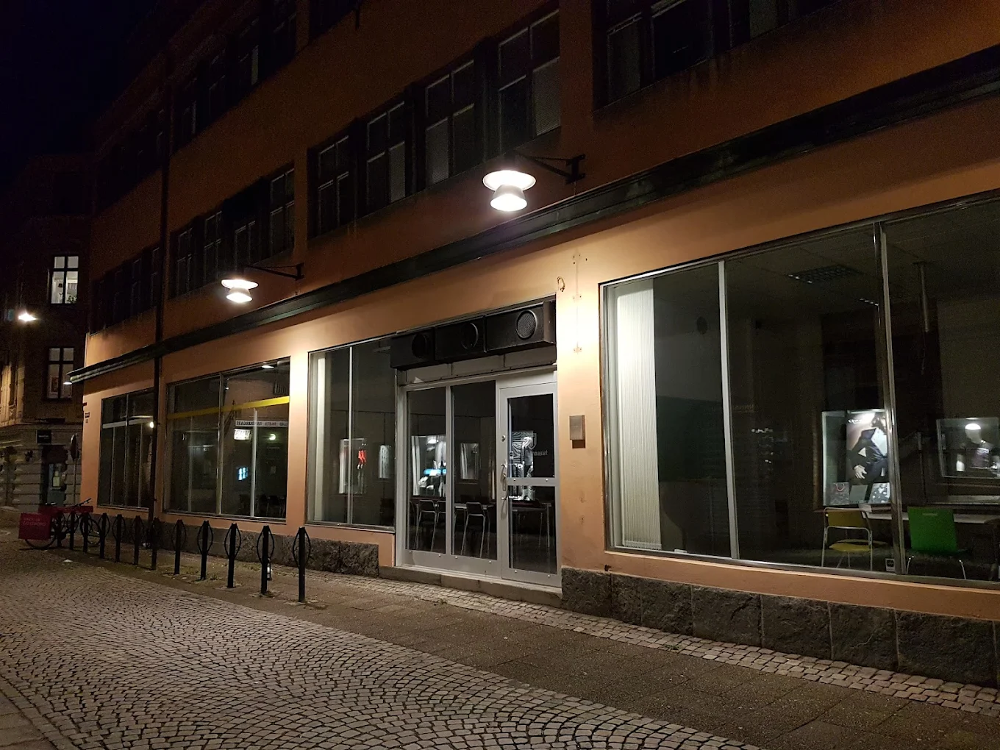

Jag går på NTI Kronhus i Göteborg, en skola som specialiserar sig inom teknik och IT. Skolan erbjuder en modern och stimulerande miljö där elever får lära sig både teoretiska och praktiska kunskaper inom IT- och teknik området.
Jag studerar på el- och energiprogrammet med inriktning mot IT. Under min tid på NTI Kronhus har jag läst kurser inom bland annat energiteknik, programmering och nätverksteknik.
| Klarade kurser | Läser just nu | Kommande kurser |
|---|---|---|
| Engelska 5 | Idrott och hälsa 1 | Historia 1a1 |
| Matematik 1a | Matematik 2a | Naturkunskap 1a1 |
| Svenska 1 | Engelska 6 | Religionskunskap 1 |
| Datorteknik 1a | Svenska 2 | Samhällskunskap 1a1 |
| Elektromekanik | Kommunikationsnät 1 | Svenska 3 |
| Energiteknik 1 | Nätverksteknik | Elektronik och mikrodatorteknik |
| Mekatronik 1 | Datorsamordning och support | Administration av nätverks- och serverutrustning |
| Dator- och nätverksteknik | Nätverksadministration | Nätverkssäkerhet |
| Programmering 1 | Nätverksteknologier | |
| Tillämpad programmering | Artificiell intelligens | |
| Gymnasiearbete |
Mitt mål är att klara alla kurser med höga betyg och att utveckla mina kunskaper inom IT och programmering så mycket som möjligt under min tid på NTI Kronhus.